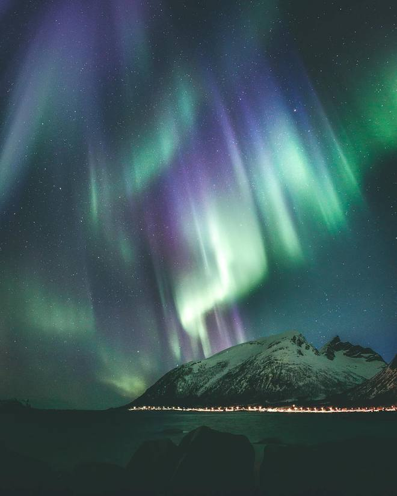

Дивовижна Норвегія
Норвегія - країна, яка дивує своєю красою. Дивовижна й багатюща природа - головне надбання Норвегії, вона вражає і закохує в себе з першого погляду. На жаль, все з чим у нас асоціюється ця країна - це кораблі та вікінги. Самі норвежці виступають за відкритість свого суспільства, так давай познайомимося з ними та їх культурою ближче.

Найцікавіші факти про Норвегію
Слово Норвегія означає "шлях на північ". Багато тисяч років тому ця країна ховалася під величезним шаром льоду.
- Щорічно в Норвегії збираються тисячі туристів, щоб прокотитися по унікальній, 20-кілометровій Фломській залізниці. З вікна поїзда видно гори, водоспади, річки, озера й фьорд. Фломську залізницю вважають справжнім витвором інженерного мистецтва.
- Населення Норвегії менше 5 млн осіб. Понад 1,5 млн норвежців живуть у столиці Осло та його передмістях. Будь-яке місто з населенням більше 30 тис. вважається великим.
- Норвежці люблять і цінують море. Жити воліють не далі 200-300 метрів від води, або в її прямій видимості. Ті, хто живе в глибині країни, все одно купують другий будиночок біля моря. Човен або катер є у 80% населення.